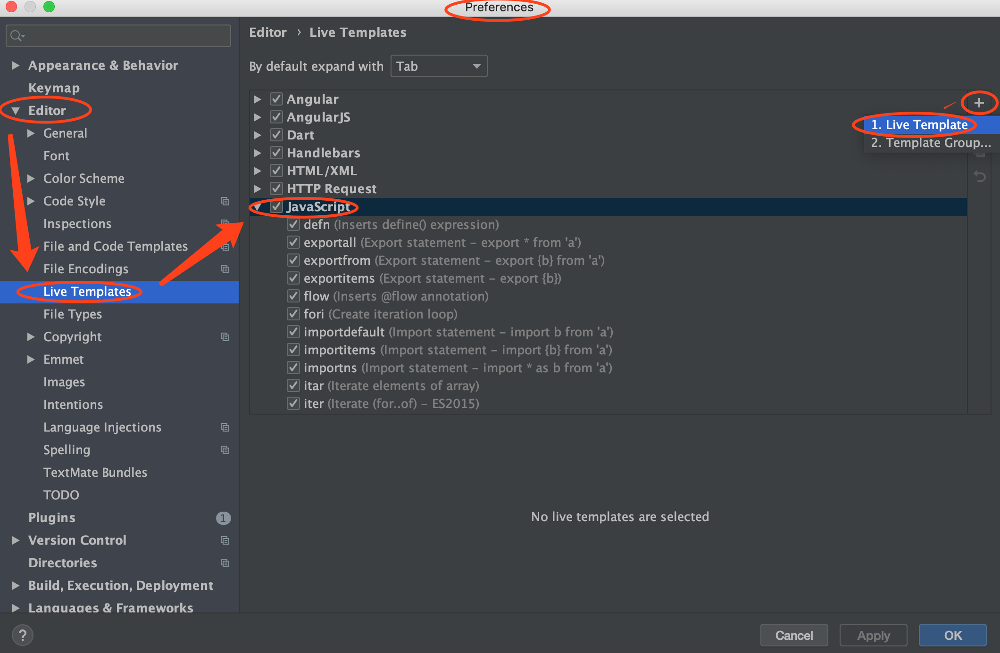
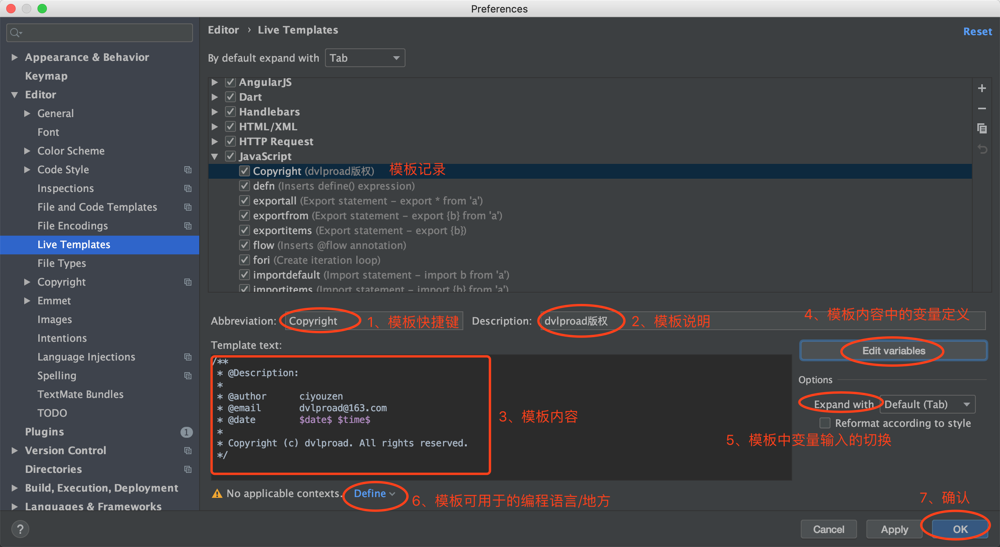
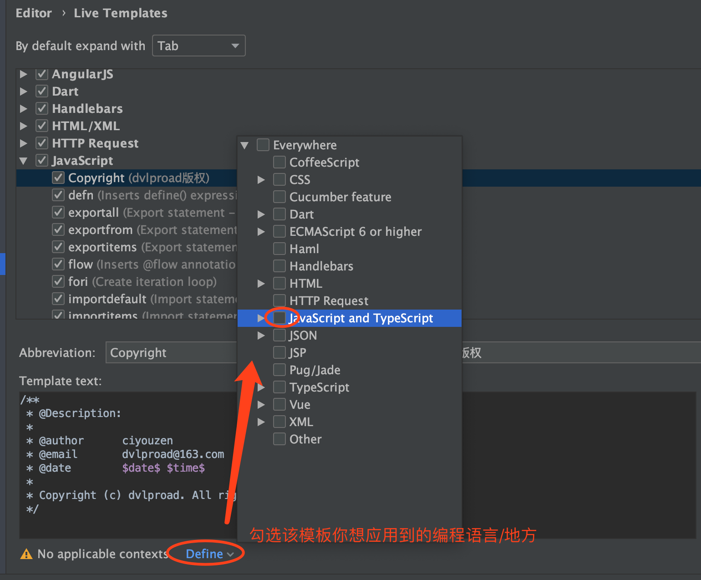

title: WebStorm
date: 2019-05-24 10:03:40
categories:
[TOC]
Live Template -> JavaScript -> 右上角“+”
/**
* $FileName$
*
* @Description: $FileDesc$
*
* @author ciyouzen
* @email dvlproad@163.com
* @date $date$ $time$
*
* Copyright (c) dvlproad. All rights reserved.
*/

①、设置模板内容中的变量定义
②、勾选你选将该模板应用到的编程语言/地方
